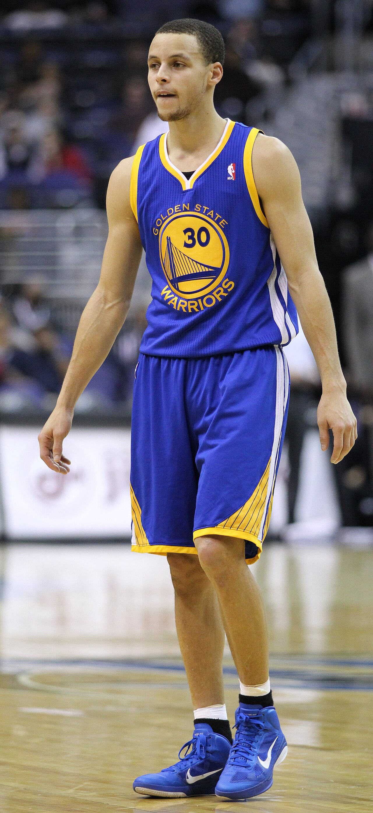
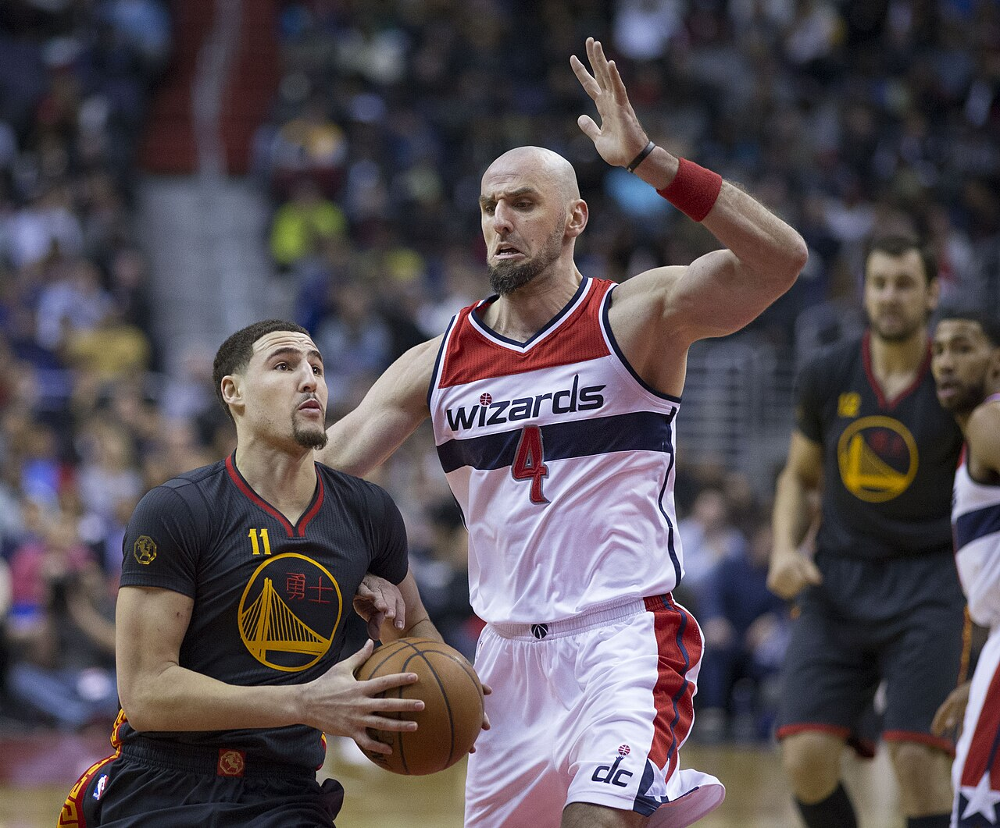
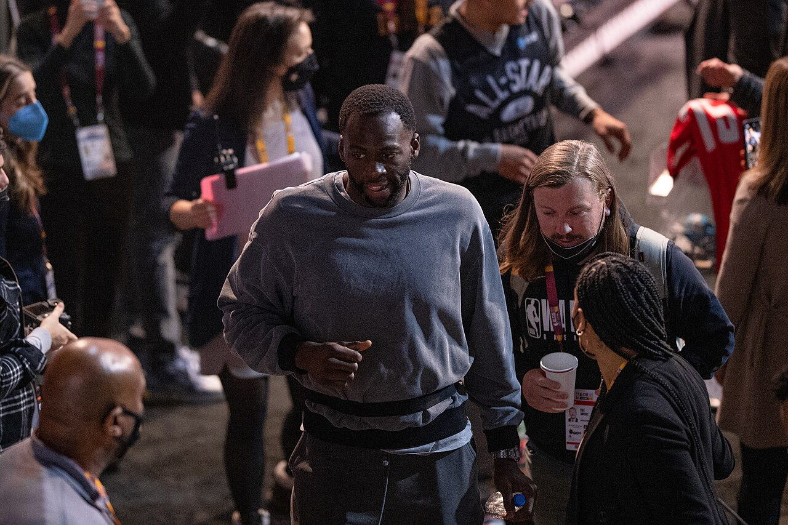
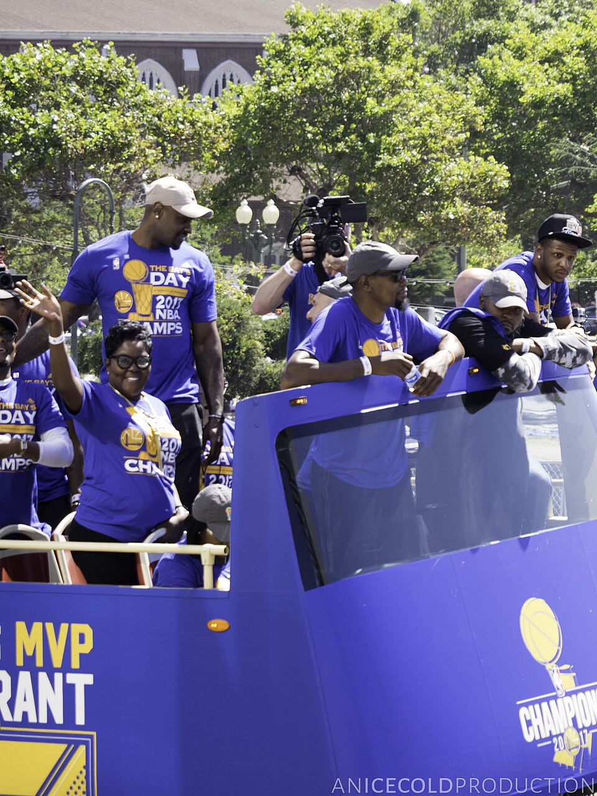
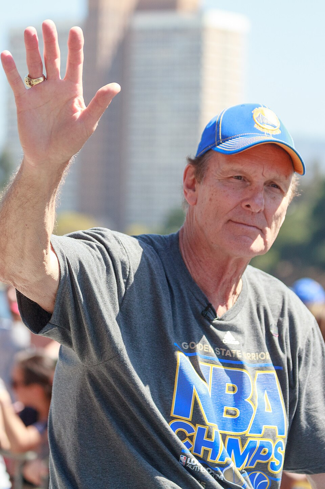

Strength in Numbers
沒有誰大過團隊。分享球權、相信下一個人，是勇士王朝最深的信仰。

一條從費城、奧克蘭流向舊金山的金色血脈。以無私傳導、空間革命與冠軍意志，讓籃球的邊界在灣區重新被定義。
沒有誰大過團隊。分享球權、相信下一個人，是勇士王朝最深的信仰。
切入、掩護、傳導不停滯；快樂不是口號，而是球的移動方式。
把三分線變成新戰場，讓射程、節奏與空間重新書寫現代籃球。
從 Roaracle 到 Chase Center，灣區球迷始終是最響亮的第六人。
大橋連結的不只城市，也是奧克蘭根源、舊金山未來與灣區認同。
紀律、韌性與冠軍細節，讓每一次投籃都承載超越勝負的標準。
以 Philadelphia Warriors 之名加入 BAA，並贏得首屆冠軍。
球隊前往舊金山，九年後正式成為 Golden State Warriors。
1947、1956、1975、2015、2017、2018、2022。
2015–16 例行賽寫下當時 NBA 史上最佳戰績。
核心班底第四度登頂，完成王朝最動人的回歸。
新主場落腳 Mission Bay，開啟灣區籃球的新篇章。
靈魂領袖 · 三分革命的起點

傳奇射手 · Splash Brother

防守核心 · 王朝的競爭心臟

兩屆 Finals MVP · 黃金篇章
費城時代的史詩級支配者

1975 Finals MVP · 冠軍傳奇
Run TMC · 灣區永恆射手
名人堂中鋒 · 防守與力量象徵
非官方概念形象網站 · 圖片來源：Wikimedia Commons（各圖授權依原始頁面標示）